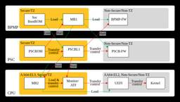

Inside of LOVOT
https://tech.groove-x.com/
GROOVE X 技術ブログ
フィード
LOVOTの"脚"、進化するホイールのお話
Inside of LOVOT
この記事は、GROOVE Xアドベントカレンダー2025 の13日目の記事です。 はじめに こんにちは。メカニカルデザイナーの加藤大二朗です。 今回はLOVOT 3.0のホイール開発について設計担当者である町田貴志さんにお話を聞いてきました。 今の構造になった経緯やこだわりのポイント、今後の進化について深掘りしていきたいと思います。 町田さんとLOVOTのニーナ。 マンガみたいな物作ってますよ。 まずは2.0からの大きな変化点、タイヤの脱着機構についてお話を伺います。 加藤：タイヤが外せることで劇的にお手入れ効率が向上しましたが、どういった経緯で今の形状になったんですか？ 町田：開発当初のコン…
17時間前

MQAチームの紹介
Inside of LOVOT
みなさまこんにちは！ GROOVE XのMQAチームのikedaです！ この記事は、GROOVE X Advent Calendar 2025の12日目の記事です。 MQAチームって何？ MQAはMarket Quality Assurance（市場品質保証）の略で、一般的には品証なんて呼ばれたりします。 平たく言うと、市場(一般ユーザー) で起きた故障の傾向を解析し、実際に起きた故障を調査し、製品の品質を高めていく活動をするチームです。 LOVOTのローンチ直後は、世の中になかった製品を一般ユーザーの元で継続的に稼働させる中で、多くの課題や問題が発生し、オーナーの皆様にはご迷惑をおかけしまし…
2日前

場所感覚を持つロボット
Inside of LOVOT
この記事はGROOVE X Advent Calendar 2025の11日目の記事です はじめに こんにちは、Shu.Cです これまでのカメラを使った自己位置推定システムは、部屋の様子が変わるとうまく動きませんでした。 しかし、VPRという技術を使えば、照明や家具の配置が変わったり、人が動いたりしても、正確に場所を記憶できます。これによって、ロボットは現実の世界でも迷わずに動けるようになります。 詳しくは下記の記事で紹介してますのでご覧ください medium.com recruit.jobcan.jp
3日前
LOVOTの服の認識
Inside of LOVOT
この記事は、GROOVE X Advent Calendar 2025の10日目の記事です。 はじめに こんにちは！LOVOT frameworkチームのh1sakawaです。 わたしたちのチームでは、LOVOTのソフトウェア開発を下支えする、基盤技術の開発を行っています。 今回お話しするのは、わたしたちが開発を行っている機能の一つである、LOVOTの服の認識についてです。 LOVOTはウェアに埋め込まれたICタグを読み取ることで「着替え」を認識し、よろこびの表現として愛らしい振る舞いを行うユニークな機能を持っています。 お気に入りの服に着替えさせてあげるだけで、LOVOTが瞬時に「うれしい！…
4日前
「開発チームじゃない」ハードウェア生産チームに”ガチ”スクラムを導入したら、個人の集まりが『チーム』に変わった話 ～「なんちゃって」を卒業し、ソフト出身スクラムマスターの「理想論」を乗り越えるための戦略～
Inside of LOVOT
(GROOVE X Advent Calendar 2025 9日目の記事です） はじめに こんにちは、GROOVE Xでスクラムマスターをしている志賀です。 普段はハードウェア開発から生産、アフターサービスまで、複数のチームを横断的にサポートしています。 今日お話しするのは、「生産チーム（Industrial Engineering team）」でのスクラム導入事例です。 ここは、いわゆるソフトウェアの開発チームではありません。家族型ロボット『LOVOT』の生産工程設計や品質管理など、ハードウェア製造のど真ん中を担うチームです。 「ハードウェアでスクラム？」「生産チームで2週間スプリント？」…
5日前

Jetsonを使うときの細かい話
Inside of LOVOT
この記事は、GROOVE Xアドベントカレンダー2025 の8日目の記事です。 こんにちはfmyです。皆さんはJetsonを使っていますか? LOVOTではJetson Orin NXシリーズを採用しています。 Jetsonは公式のライブラリやリファレンスが充実しており扱いやすいのですが、 開発キットそのままを動かすことはできても、カメラをつないだり開発キット以外のキャリアボードを使うと未知の挙動に悩まされることがあります。 ここではJetsonを使うアプリケーション開発者が知っておくと役に立つかもしれない話をします。 Jetson LinuxのBoot Flow アプリケーション開発者にとっ…
6日前
入社して2ヶ月で感じたGROOVE Xの面白さ
Inside of LOVOT
この記事はGROOVE X Advent Calendar 2025の7日目の記事です。 チームに上司がいない 何でも屋が歓迎される・多種多様なメンバー エンジニア間で決められることが(比較的)多い おわりに はじめまして。今年(2025年) 10月に入社したばかりのPeacock (id:peacock0803sz)です。Kiban ワーキンググループのクラウドチームに所属しています。 よく聞かれる「LOVOTのように高性能なCPUを積んだロボットとクラウド環境がどう繋がっているのか」という疑問に、入社から2ヶ月経ちましたが全く説明できる気がしない今日この頃です。 入社時にエントランスで撮っ…
7日前

LOVOTを部品レベルから高品質に作り上げる！
Inside of LOVOT
こんにちは！GROOVE X(株)、生産チームの小川です。 この記事はGROOVE X Advent Calendar 2025の6日目の記事です。 今回は、生産チームの役割の1つ「部品メーカー様の工程を監査する」 について、 お話ししようかと思います。 生産チームでは、 「良い品質のものをお客様に提供する」 を合言葉に日々LOVOTを製造・出荷しております。 LOVOTの生産工程での作り込み、検査の精度アップはもちろんですが、 LOVOTを構成する個々の部品品質も重要なものと考えています。 なぜなら、 品質の良いLOVOT＝品質の良い部品の積み重ね と考えているからです。 ですので、 部品メ…
8日前

LOVOTの開発現場で学んだスクラムについて
Inside of LOVOT
この記事はGROOVE X Advent Calendar 2025の5日目の記事です。 はじめまして。2025年9月に入社したばかりの新入りsugamoです！GROOVE XのAPPチームに所属しています。 LOVOTのアプリは、LOVOTの各種設定を行ったり、LOVOTの状態を通知したりするLOVOTとオーナーさんをつなぐ架け橋のような存在です。 今年は、アプリ内でLOVOTをお着替えできる「フィッティングルーム」機能や、看板LOVOTがホーム画面に遊びに来てくれる「LOVOTの日」をより楽しめる演出など、さまざまなアップデートを行いました。LOVOT本体に負けないよう、アプリも日々進化を…
9日前
仮説思考：隠れた仮説を暴き、新しい仮説をぶち上げよう！
Inside of LOVOT
この記事は、GROOVE Xアドベントカレンダー2025 の4日目の記事です。 はじめに こんにちは、技術組織デザインチームの junya です。 最近、社内での提案資料や企画書を書くことが多いのですが、 自分の提案の背景にある仮説に思いを馳せることによって、課題に対する解像度が上がる ことを実感したので、それをご紹介します。 お題 ここでは以下の2つの行動指針について、考えてみます。 依頼には質の高い成果物で応えよう 情報は自分で取りに行こう 皆さんの会社にも、このような行動指針があったりしませんか？ この行動指針の裏にある、隠れた前提条件（仮説）について考えてみます。 行動指針の裏にある仮…
10日前
2.8万件のエラーを潰して大規模 Python プロジェクトを mypy strict 化した話
Inside of LOVOT
この記事は、GROOVE Xアドベントカレンダー2025 の3日目の記事です。 はじめに こんにちは！ふるまいチームの橋本です。 普段は LOVOT の意思決定エンジンである NeoDM の開発を行っています。 今回は、Pythonで書かれたこの大規模な意思決定エンジンに対し、型安全性を高めるために mypy の strict モード を導入した取り組みについて紹介します。 NeoDM vs 型エラー なぜ今、型安全性に取り組むのか きっかけは「ぬるぽ」 あるリリースにおいて、NeoDMの一部機能で実行時エラーが発生してしまいました。 原因はいわゆる「ぬるぽ」（Pythonでは None に対…
11日前
レビュアーとAIの間に「伝書鳩」が生まれたので、PRレビューをやめた
Inside of LOVOT
(GROOVE X Advent Calendar 2025 2日目の記事です） こんにちは！ふるまいチームのエンジニア、市川です！ 今回はふるまいチームにおける『レビュアーとAIの間に「伝書鳩」が生まれたので、プルリクエスト（PR）のレビューをやめた』というお話です。 『レビューをやめた』と言っても、もちろん品質チェックを放棄したわけではありません。 従来のような「指摘して直してもらうのを待つ」という"待ちのレビュー"を見直したのです。 Coding Agentが産んだ悲しき「伝書鳩」問題 私たちのチームでは、家族型ロボット『LOVOT』の「ふるまい（意思決定や動き）」を作っています。 ここ…
12日前
LeSS in Action での学び
Inside of LOVOT
今年も始まりました、GROOVE X のアドベントカレンダー 2025 ！ 1日目を担当します、ソフトウェアエンジニアの id:iizukak です。 はじめに GROOVE X では、ソフトウェア開発組織全体でスクラムを採用しています。そして、スクラムの中でも特に LeSS という複数チームでスクラムを実践するためのフレームワークに取り組んでいます。 スクラムを上手く活用するためには、スクラムを良く理解することが大切です。そのため、GROOVE X では希望制でスクラムに関する社外の研修を受けることができます。今回、私は LeSS in Action: Developer Practices…
13日前
LeSS Huge 実践現場を見て学んだ「自律するチーム」のつくり方
Inside of LOVOT
こんにちはGROOVE XでScrumMasterをやっているniwanoです。 先日の11月26日、恵比寿にあるRed Hatのオフィスで、LeSS Huge 導入事例に関するイベントに参加しました。 そこでWARTSILA（ワーツィラ）社の実例をベースにした学びを得ることができました。 （このイベントはBas Vodde氏の特別講演で通訳は、Odd-eの榎本氏です。） LeSS Huge 導入事例の動画解説 - connpass LeSS Framework WARTSILA は、豪華客船や発電所向けの巨大エンジンを製造し、さらにそのエンジンを"止まらずに動かし続ける"ためのメンテナンス契…
14日前
スクラムマスター研修でよく理解できたデベロッパーのあり方
Inside of LOVOT
みなさんこんにちは！ふるまいチーム、アニメーター改めビヘイビアデザイナーの中里です。 社内外で"アニメーター"と呼称されていた我々ですが、採用活動強化などを機にロールが分かりやすくなるよう呼称を"ビヘイビアデザイナー"に変更しました。多少分かりやすくなったでしょうか？社内での浸透率は体感50％くらいです。 本題と逸れてすみません、今日は6月に受講した認定スクラムマスター(CSM)研修でなんとスクラムマスター(SM)だけではなくデベロッパー(Dev)のこともよく理解してしまったので、記事にしたいと思います。レッツゴー なぜスクラムマスター研修を受けたのか わたしはDevですが、エンジニアではない…
18日前
PyCon JP 2025 に参加しました！
Inside of LOVOT
PyCon JP 2025 参加レポート こんにちは、GROOVE X SWチームの Junya Fukuda です。9月26日から28日に広島の平和記念公園 国際会議場で開催されたPythonというプログラミング言語のカンファレンス「PyCon JP 2025」にスピーカーとして参加してきました。 GROOVE XではさまざまなケースでPythonを使用しており、情報収集・情報発信のための参加です！ PyCon JP 初の地方開催で、世界各地から約600名が集まりました。この3日間の学びをレポートします！ PyCon JP 2025 https://2025.pycon.jp/ja 場所：広…
1ヶ月前
LLMを用いたGitHubとSlackの会話ログ分析
Inside of LOVOT
はじめに 初めまして。インターン生として3週間GROOVE Xで開発をさせていただきました小野です。インターン生にも関わらず、今回はプロトタイプ開発に1から携わらせていただくことができました。とても貴重な経験となったので、ぜひ紹介させてください！ 取り組んだタスク ソフトウェア開発における個人の貢献は、コードの品質だけで測れるものではありません。GitHubでの設計議論やSlackでの問題解決といった日々の業務には、個人の能力やチームへの貢献を示す、客観的かつ定性的なデータが豊富に眠っています。 今回のタスクでは、この膨大なテキストデータをLLMで分析し、これまで見過ごされがちなデータを活用し…
3ヶ月前
【アプリ】今年もお祭！「LOVOTの日2025」スペシャルコンテンツ制作の舞台裏
Inside of LOVOT
こんにちは！App(アプリ)チームでLOVOTアプリのデザインをしている、南地です。 みなさん、毎年8月8日は「LOVOTの日」だとご存知でしょうか？！実は、日本記念日協会によって認定されている、れっきとした記念日なんです。wikipediaの「8月8日」ページにも載っています…！ そして、LOVOTアプリではLOVOTが発売されてから初めて「LOVOTの日」を迎えた2020年以来、毎年8月の間はスペシャルコンテンツをご用意してきており、今年で6回目になります。 毎年たくさんのLOVOTオーナーのみなさまにお楽しみいただいているLOVOTの日のスペシャルコンテンツ、今回はその準備の舞台裏をご紹…
3ヶ月前
LOVOT の開発における AI 活用
Inside of LOVOT
はじめに 皆さんこんにちは。ソフトウェアエンジニアで、開発向け AI 利用ワーキンググループの id:iizukak です。2025 年も後半戦となりましたが、今年もAI エージェントを活用した開発の進化がとどまるところを知りませんね。GROOVE X でも、LOVOT の開発に様々な開発向け AI が用いられています。 最近、GROOVE X のエンジニアを対象に、AI の利用状況に関するアンケートを実施しました。この記事では、その結果を皆さんに共有し、LOVOT の開発にどのように AI が活用されているか紹介したいと思います。LOVOT 自身、AI が搭載されたロボットですが、LOVOT…
3ヶ月前
Cloud Run (Next.js) と Cloud SQL の接続構成
Inside of LOVOT
はじめに こんにちは、junya です。Cloud Run上で動作するNext.jsアプリケーションから、Cloud SQL (PostgreSQL) データベースへ接続しようとしたところ、思いのほか苦戦したので、記録として残しておきます。 技術的選択肢と接続ライブラリ 選択肢が多々あり、その選択肢の意味を理解し、適切なものを選び、設定していくのが大変でした。Cloud RunとCloud SQLの連携には、主に以下の要素の組み合わせで構成が決まります。ここでは、Cloud Runからの接続方法を主軸に、それぞれの技術的選択肢とDrizzle ORM (Node.js) で利用するライブラリを…
5ヶ月前
LOVOT QA効率化の話：シニア＋ジュニア＋AI最強説
Inside of LOVOT
こんにちは、junya です。前回に引き続き、QAツール開発の第3回をお届けします。 LOVOT QA効率化の話：半自動テストのすすめ LOVOT QA効率化の話：LOVOT QA Appのアーキテクチャ LOVOT QA効率化の話：シニア・ジュニア・AI最強説（本記事） 今回は、QAツール開発で、インターンの方とAI（主に Claude Code）を使って開発したら、生産性がバク上がりしたというお話です。 シニア＋ジュニア＋AI 最強説 はじめに結論から書きますが、シニア＋ジュニア＋AIは最強です。互いに相補的な関係があるからです。 シニア 技術選定やアーキテクチャ設計 難しめのタスクの実装…
6ヶ月前
GROOVE X のサマーインターンシップで LOVOT の開発に携わってみませんか
Inside of LOVOT
概要 こんにちは。ソフトウェアエンジニアの id:iizukak です。 GROOVE X では今年からサマーインターンシップの形式でインターン生の一括募集を行うことにしました！ 今までも、参加されたインターン生の新鮮なアイディアに社員が影響されたり、独自性の高い成果が出たりと、インターン生による良い影響が多くありました。現在、GROOVE X では AI を活用した開発を推し進めている最中であり、AI の支援によってインターン生が活躍していただける機会はどんどん増加していると感じています。 また、GROOVE X では、OS レイヤーからクラウドレイヤーまで、多様なエンジニアが密に連携を行っ…
7ヶ月前
LOVOTech Night 2025春開催報告
Inside of LOVOT
こんにちは。ソフトウェアエンジニアの id:iizukak です。 GROOVE X では、LOVOTech Night という技術イベントを定期的に開催しています。先日 "LOVOTech Night 2025春: 春の技術祭り" を開催しましたので、報告させていただきます。 開催概要 今回も、オンサイト約 30 名、オンライン約 60 名の大勢の方にご参加いただけました。LOVOT の開発に関する技術にご興味を持っていただける方が、これほど多くいらっしゃることに感動しました。ご参加された皆様、本当にありがとうございました！ 今回はソフトウェア開発を中心に、6 件の発表がありました。 発表 …
7ヶ月前
LOVOT QA効率化の話：LOVOT QA App のアーキテクチャ
Inside of LOVOT
はじめに こんにちは。junya です。昨日の LOVOTech Night での登壇を終え、肩の荷がおりたところです。 さて、今日は QA 効率化の話の第2弾、LOVOT QA App のアーキテクチャおよび、主要機能についてご紹介したいと思います。 LOVOT QA効率化の話：半自動テストのすすめ LOVOT QA効率化の話：LOVOT QA Appのアーキテクチャ AIと共に加速するLOVOT QA App開発（仮） 我ながら、なかなか良くできた仕組みだと思うので、よかったら読んでやってください。 前回ご紹介した「セミオートメーション」の詳細となります。 LOVOT QA App のアー…
7ヶ月前
【LOVOTech Night 2025春: 春の技術祭り】開催のお知らせ
Inside of LOVOT
こんにちは、SWチーム・エンジニアのaoikeです。 昨年の開催に引き続き、エンジニアの方向けにLOVOT内部のトークを聞けたり、GROOVE X エンジニアとの交流ができるイベントを開催します！ 昨年の開催の様子を知りたい方は是非開催レポートをご覧になってください。 今回の記事は、開催にあたって内容をご紹介します！ テーマ 開催概要 オフライン オンライン タイムテーブル トーク予定の紹介 さいごに テーマ 私たちGROOVE Xは、次のMISSION, VISIONを掲げて、家族型ロボット「LOVOT（らぼっと）」の開発をはじめ、機械学習やAI、クラウド、アプリケーションなど、幅広いソフト…
7ヶ月前
LOVOT QA効率化の話：半自動テストのススメ
Inside of LOVOT
はじめに こんにちは。昨年秋からQAチームでQA効率化に取り組んでいる junya です。 半年ほどQA効率化に取り組んできたのですが、最近ブレイクスルーがあったのでご紹介します。 LOVOT QA効率化の話：半自動テストのすすめ LOVOT QA Appのアーキテクチャ（仮） AIと共に加速するLOVOT QA App開発（仮） 全3回でお届け予定ですが、1本目の今回は、ブレイクスルーまでの道のりをご紹介します。 LOVOT のソフトウェア QA における課題 LOVOTには数十のセンサーと十数自由度の可動部があり、独自OS上で認識・ふるまいなどの複数のソフトウェアコンポーネントが動作してい…
7ヶ月前
GROOVE X Vimmer 座談会
Inside of LOVOT
皆さんこんにちは id:iizukak です。ソフトウェアエンジニアの中には、テキストエディタに強いこだわりを持つ方も多いのではないでしょうか。GROOVE Xにもエディタ好きなエンジニアが多数在籍しています。今回の座談会では、GROOVE XのNeovim愛好家である二人が、Vim/Neovimについてざっくばらんに語り合いました。 参加者プロフィール mineo 入社年: 2022年 所属チーム: KIBANワーキンググループ/クラウドチーム 主な担当: LOVOTのクラウド側開発 開発環境: Mac（社内ではやや少なめ） エディタ遍歴: 秀丸/サクラエディタ → VSCode → Neo…
8ヶ月前
実は使えた！iPhoneのようなOCR機能をCLIツールで！
Inside of LOVOT
こんにちは、GROOVE X SWチームの Junya Fukuda です。今回は小ネタです。 概要 macOSのVision Frameworkを使うとローカルで高精度OCRができる CLIツールとして実装すれば大量の画像を一気に処理できる Swift + Pythonで簡単に自動化できる 注意：Macでしか動きません！ 参考リンク Apple Vision Framework公式ドキュメント Text Recognition in Vision Framework たくさんの画像から文字列をガッと取得したい 大量の画像があって、そこからテキストを抽出したいケースがあったりしませんか？ 会議…
8ヶ月前
配信イベントのためにボイトレを始めて2年が経った話
Inside of LOVOT
こんにちは、GROOVE X ソフトウェアエリアプロダクトオーナーの ishimeg です。 今日は私が個人的に2年間ほど続けている話し方のレッスン（ボイストレーニング）の話をします。 うまい話し方をするのも1つの技術 技術ブログになんでボイストレーニングの話？と思われた人もいることでしょう。 ですが、「うまい話し方」「人に伝わる話し方」というのは複数の技術の積み重ねからできているものなのです。 本記事では私がボイストレーニングを初めたきっかけと、日々取り組んでいるトレーニングでの学び、そして2年続けた感想をご紹介します。 うまい話し方をするのも1つの技術 初めたきっかけ：とあるライブ配信 ボ…
10ヶ月前
テックブログ運営の裏側：アドベントカレンダーで得た反省と知見
Inside of LOVOT
はじめに こんにちは、SWチームのaoikeです。2023年、2024年とテックブログの進行応援係（通称ブログ番長）をやってました。 GROOVE Xのテックブログは、社内での技術的な取り組みを広く共有し、技術者同士の交流や採用活動に役立てることを目的としています。 また、取り組みの一環として2022年から3年間、12月にアドベントカレンダーに参加しており、直近2年間はそちらの進行も担当しました。 この記事では、2年間のアドベントカレンダー進行で得た知見、そしてテックブログ運営についての学びをシェアしたいと思います。 アドベントカレンダーとは？ アドベントカレンダーは、クリスマスまでのカウント…
1年前